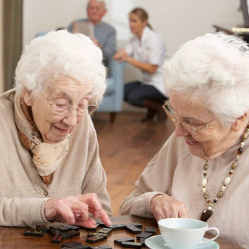
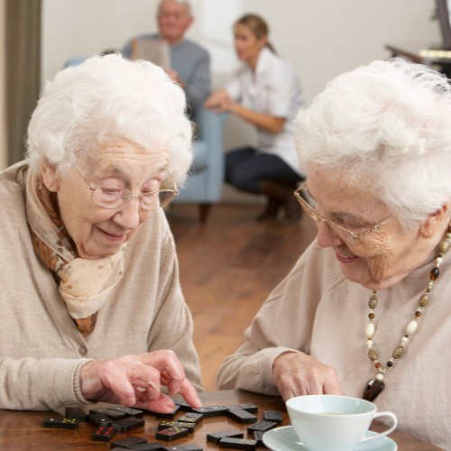

Que és?
És un recurs d’atenció diürna per a les persones gran amb un deteriorament físic i/o cognitiu. L’objectiu és fomentar el major grau d’autonomia possible.
Que fem?
Al centre de dia fem un seguiment personalitzat de cada usuari per poder oferir una atenció integral amb un enfocament biopsicosocial.
Realitzem vàries activitats perquè els usuaris estiguin distrets i sobretot puguin treballar el seu deteriorament físic o cognitiu:
- jocs de memòria
- Tallers de reminisència
- Bingo
- Tallers d'activitats físiques


 
